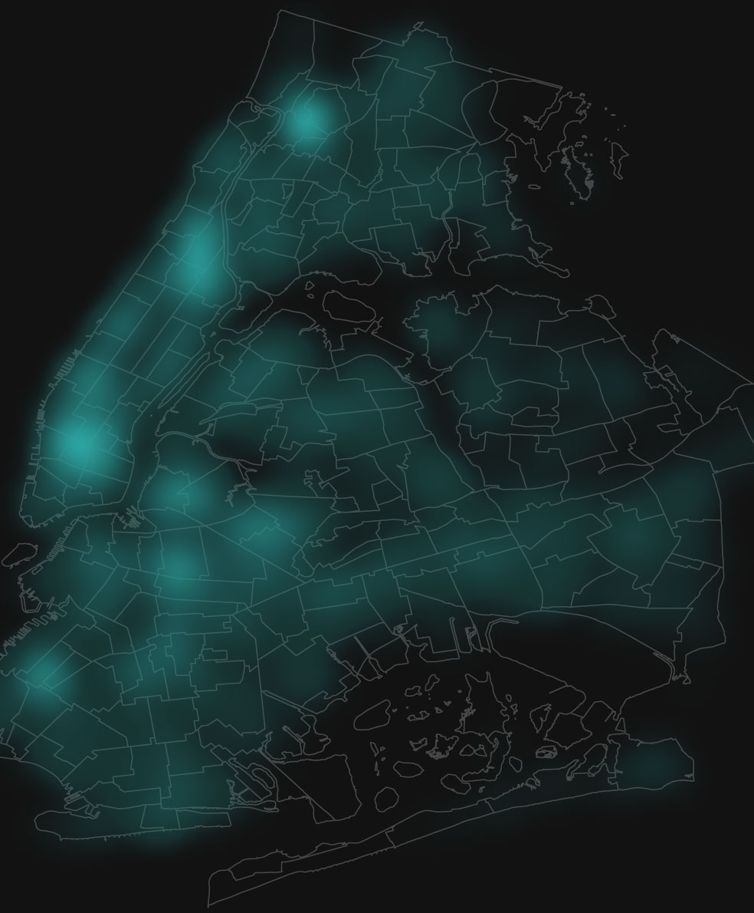
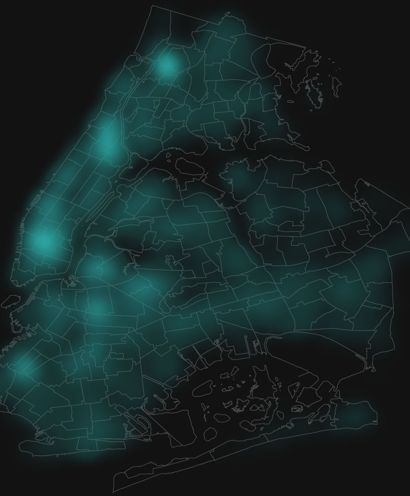

New York, the capital of rats
Rats are a growing problem in New York City. Since the pandemic, rat sightings in the metropolis have skyrocketed. Data from NYC's 311 system reveals rat hotspots.
Rats are a growing problem in New York City. Since the pandemic, rat sightings in the metropolis have skyrocketed. Data from NYC's 311 system reveals rat hotspots.
Rats arrived in New York on British ships in the 18th century and are now as much a part of the city as skyscrapers and yellow cabs. It's often said that New York City has more rats than inhabitants. Estimates suggest that there are currently about two million rats in New York City . Last year, the city's 311 system received more than 25,400 reports of rat sightings, slightly fewer than the peak year of 2022. Compared to the pre-pandemic year of 2019, there was an increase of over 50 percent.
It should be noted that various factors influence the accuracy of the data. Since NYC’s 311 system began in 2003, complaints and questions have generally increased. The introduction of web (2009), text (2011), and phone app (2013) options has made it easier for New Yorkers to report issues.
To compare the boroughs i combined the NYC 311 data with U.S. census data to estimate the number of rat sightings per 10,000 residents. In 2023, the borough of Manhattan recorded the most rat sightings per resident. In absolute terms, Brooklyn leads. If you suffer from a fear of rats, you should head to Staten Island, which has by far the fewest rodent complaints (14 per 10,000 residents compared to 41 complaints per 10,000 residents in Manhattan).
New Yorkers face the plague with humor, sharing their rat videos on social media. The videos show rats climbing over sleeping people in the subway, scurrying between passengers' feet, or foraging for food in the trash. If we look at the data from the 311 system, we can see some interesting patterns.
The map below shows where the most rat sightings are happend in 2023.
Hotspot 1
Upper Westside and Harlem in Manhattan
Hotspot 2
Bedford and
Bushwick North in Brooklyn
 

Hotspot 1
Upper Westside and Harlem in Manhattan
Hotspot 2
Bedford and
Bushwick North in Brooklyn
If we overlay New York's subway lines on the map of rat sightings, we can see that the rat sightings are concentrated in the same areas as the subway lines.
Now the map shows where New Yorker reported most dirty sidewalks (trash) in 2023.
If we compare this two layers, we see that there are common patterns between reported rat sightings and dirty sidewalks. Areas with the most rat sightings also reported most dirty sidewalks.
The more shelter, food, and trash, the higher the rat count. Rats often living right in the station walls not that deep dark tunnel, according to rodent expert Robert Corrigan . They usually reside in the walls of the trash rooms, which are often situated directly on the train platforms. The persistent pests have plagued New York's subways for decades, with previous efforts like poison bait packs yielding lackluster results.
Today, New York has a Rat Czarina: Kathy Corradi, a former teacher and waste management expert, who started a petition against rats when she was just ten years old.
According to Mayor Eric Adams, trash piles on sidewalks will soon be a thing of the past. He announced that New York City will containerize 100% of trash in Manhattan Community Board 9 by next year, using automated, side-loading garbage trucks and a new containerization strategy. This initiative, will replace system with stationary on-street containers, similar to those used in Europe, Asia, and South America.
Installation will start in spring 2025, with new containers and trucks. An environmental review and community outreach will be conducted this year. The timeline for expanding beyond Community Board 9 will depend on the pilot's results.